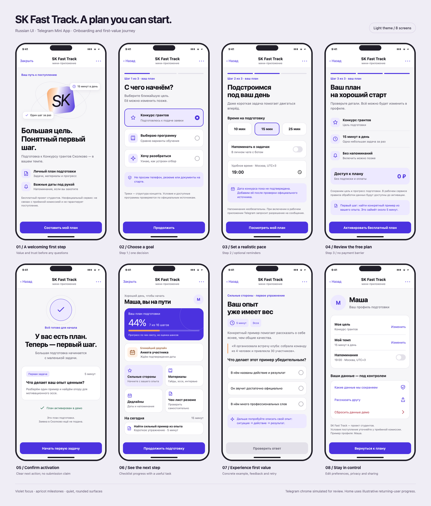
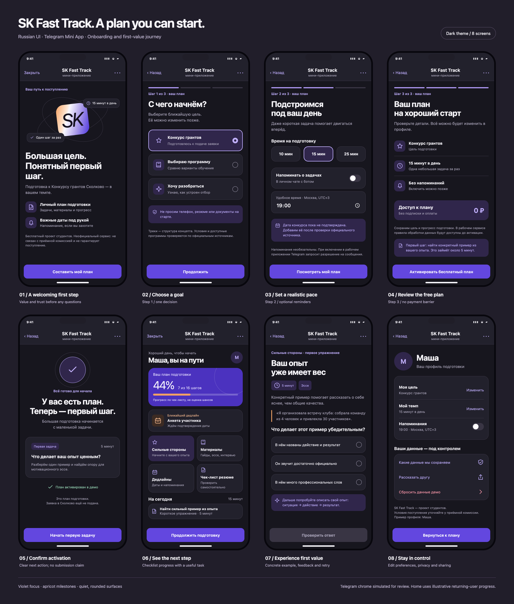
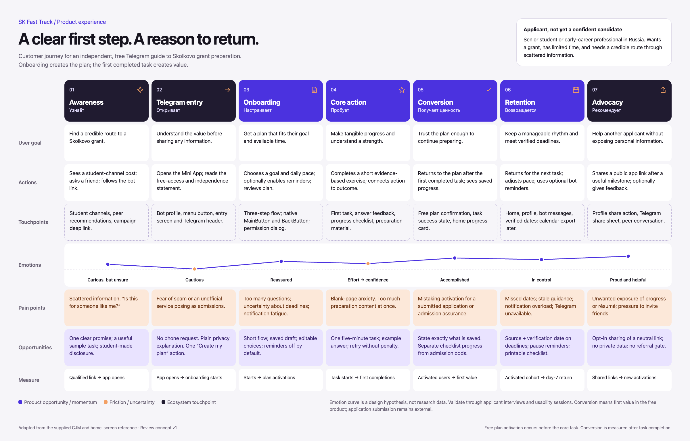

Light themeEight screens from entry to first value.Full-resolution PNG / Editable HTML boardentrytrackschedulereviewsuccesshometaskprofile
Dark themeEight screens from entry to first value.Full-resolution PNG / Editable HTML boardentrytrackschedulereviewsuccesshometaskprofile
Customer journey mapSeven stages, six experience dimensions, an emotional curve and a measurement layer.Full-resolution PNG / Editable HTML